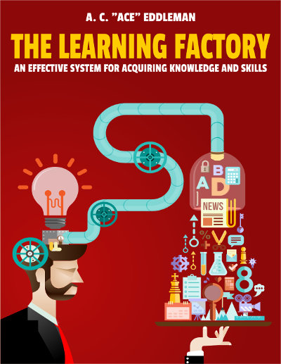

<div style="text-align:center;">

<div class="well">

<h2>Ace Eddleman</h2>

</div>

<div class="btn-group btn-group-justified">
  <a href="#webdev" class="btn btn-success" id="webdev-button"><h1>Web Developer </h1></a>
  <a href="#author" class="btn btn-primary" id="author-button"><h1>Author</h1></a>
</div>

<div class="well" id="webdev">

<h2>Personal Projects</h2>
<h4>Want to know more about my professional experience and/or hire me? Send me a <a href="/contact/">message</a>.
<hr>
<table class="table table-striped table-hover ">
  <thead>
    <tr>
      <th>Name</th>
      <th>Description</th>
      <th>Tech Used</th>
      <th>URL/Github Repo</th>
    </tr>
  </thead>
  <tbody>
    <tr>
      <td>SkillStreak*</td>
      <td>Productivity visualization</td>
      <td>Python/Django REST/JavaScript/Bootstrap/Postgres/AWS</td>
      <td><a href="https://github.com/acecodes/skillstreak">Github</a></td>
    </tr>
    <tr>
      <td>AceScrum*</td>
      <td>Agile task tracking</td>
      <td>Python/Django REST/JavaScript/Backbone.js/Bootstrap/Postgres/AWS</td>
      <td><a href="https://github.com/acecodes/acescrum">Github</a></td>
    </tr>
    <tr>
      <td>AceAdvisor</td>
      <td>Finance website scraper</td>
      <td>Python/Flask/Zurb Foundation/Heroku</td>
      <td><a href="http://aceadvisor.herokuapp.com">URL</a></td>
    </tr>
    <tr>
      <td>AceSafe</td>
      <td>Backup synchronization</td>
      <td>Python</td>
      <td><a href="https://github.com/acecodes/AceSafe">Github</a></td>
    </tr>
    <tr>
      <td>AceTask</td>
      <td>Simple task manager</td>
      <td>JavaScript/AngularJS</td>
      <td><a href="http://www.52aces.com/acetask/">URL</a></td>
    </tr>
    <tr>
      <td>AceTimer</td>
      <td>Pomodoro productivity timer</td>
      <td>JavaScript/AngularJS</td>
      <td><a href="http://www.52aces.com/acetimer/">URL</a></td>
    </tr>
    <tr>
      <td>BitBurrow</td>
      <td>Morse code decoder/encoder</td>
      <td>Python/Flask/Bootstrap/Heroku</td>
      <td><a href="http://www.bitburrow.com">URL</td>
    </tr>
    <tr>
      <td>52 Aces</td>
      <td>Book website</td>
      <td>WordPress/PHP/MySQL</td>
      <td><a href="http://www.52aces.com">URL</a></td>
    </tr>
    <tr>
      <td>AceCodes.net</td>
      <td>Personal website</td>
      <td>Ruby/Jekyll/JavaScript/jQuery/Bootstrap/Amazon S3</td>
      <td>You're here!</td>
    </tr>
  </tbody>
</table> 
<hr>
<p>* Still under construction</p>
<p></p>
<em>Note: all of these projects (and many more!) can be found in my <a href="https://github.com/acecodes/">Github account.</a></em>


</div>

<div class="well" id="author">
<a href="//www.52aces.com/books"></a>
<h4>In 2014, I wrote my first book, The Learning Factory. It's the result of my 7 year journey towards finding the fastest and most effective learning methods available. I went through a bunch of bunk ideas and methods before arriving at the most scientifically-sound concepts available, and now my pain can be your gain. I've used the methods in this book to change careers (from finance to web development), and I want everybody to have the tools I used available to them as well. For more information, check out my <a href="//www.52aces.com">book website</a>.
</div>

</div>

{% javascript jquery.min %}
{% javascript aceboxes %}